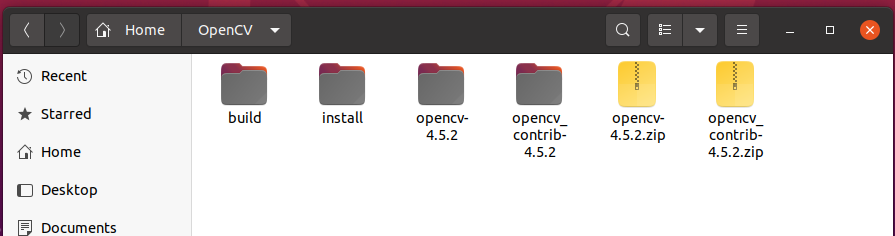
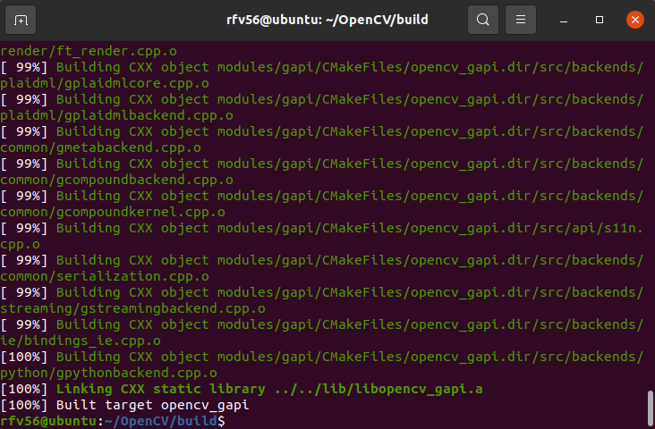

一、环境准备
Ubuntu环境的虚拟机或主机
- 按照芯片厂提供的SDK文档配置好交叉编译工具链，
- 下载opencv源码，如果需要opencv_contrib则下载与opencv源码相同版本的opencv_contrib源码。
- 下载安装cmake-gui
二、编译配置
以下例子使用的是君正T40作为例子，采用mips架构
三、构建目录
将opencv和opencv_contrib的源码解压出来，并新建两个目录分别为build 和 install

打开cmake-gui，将opencv源码位置和build文件夹位置填入cmake
指定CMAKE_TOOLCHAIN_FILE
点击Add Entry，Name填写CMAKE_TOOLCHAIN_FILE，选择FILEPATH，Value填写的是opencv源码下/platforms/linux/mips32r5el-gnu.toolchain.cmake，如果你使用的是其他架构的芯片，选择对应的即可

确认无误后点击Configure，选择Unix Makefiles，指定Specify options ofr cross-compiling，点击下一步
在弹出的窗口分别填上所使用的操作系统，处理器架构，交叉编译器gcc和g++以及交叉编译器根目录，点击完成
填写正确的情况下cmake-gui下方会弹出当前配置的选项以及cmake自动识别获得的一些信息，上方是配置项
修改编译选项
- (可选)如果需要使用opencv_contrib，搜索OPENCV_EXTRA_MODULES_PATH，选中opencv_contrib源码目录下的modules文件夹
- 找到CMAKE_C_FLAGS_XXX、CMAKE_CXX_FLAGS_XXX分别添加-fPIC编译选项，如果你所使用的嵌入式程序使用uclibc，则还需要加上-muclibc，默认情况下，release编译使用-O3的优化选项，如果你在编译完成后发现运行出现Illegal Instruction可以考虑将-O3改为-O2重新编译，其他选项保持默认即可
3. 给CMAKE_EXE_LINKER_FLAGSXXXX加上-lpthread -lrt -ldl选项
- (可选)将CMAKE_INSTALL_PREFIX修改为自己创建的install目录，如果不修改则会在build目录下自动创建一个install目录
- 根据需要勾选自己需要的模块，比如zlib、png、jpeg等
- 根据需要取消勾选一些模块，比如java、python、js等相关的生成器和test模块
- (可选)如果不是特别在意编译后大小，可以勾选opencv_world，会将opencv的所有功能包含进opencv_world，这样只需要链接opencv_world这一个库即可，不需要考虑功能之间的依赖关系
- (可选)取消勾选BUILD_SHARED_LIBS，则编译输出的结果是.a静态库，否则编译结果是.so动态库。
- (可选)CPU_BASELINE，默认选择MSA，实际使用中发现尽管是mips架构，但芯片可能并不支持MSA，可以选择关掉，以免出现报错
选择完成后点击Configure，如果有很多红色选项可以在次点击Configure，直到红色选项消除。
点击Generate，生成Makefile
四、开始编译
在终端中打开build目录
1 | make -j8 #8表示8个同时作业数，根据实际情况填即可 |
编译过程耗时比较长，编译过程中可能出现报错base.hpp:548:17: error: 'cbrt' is not a member of 'std' return std::cbrt(val)修改提示报错的源码，将std::cbrt改为cbrt，同样出错的可能还有std::copysign等，同样将std::去掉即可，去掉之后重新make -j8继续编译

编译完成后sudo make install，输入密码，即可完成编译，编译输出的库在所配置的install目录中，可以程序调用。